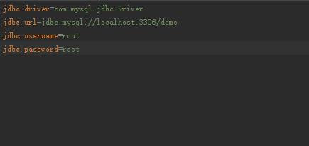
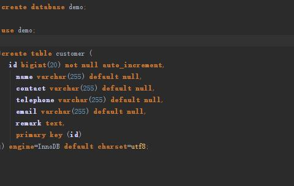
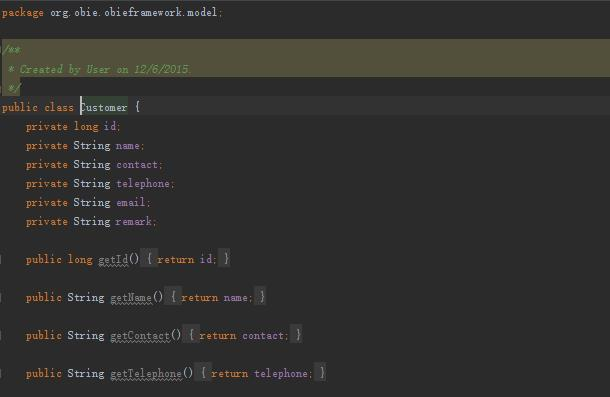
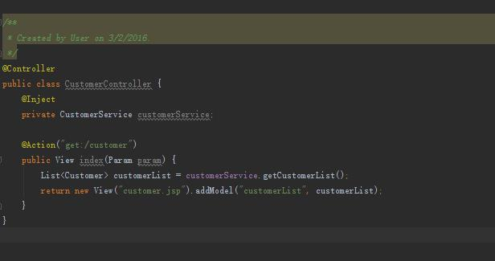
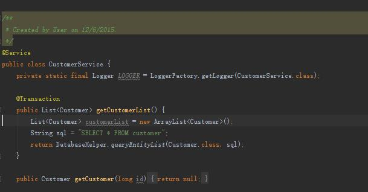
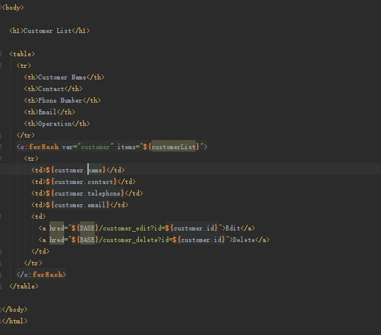
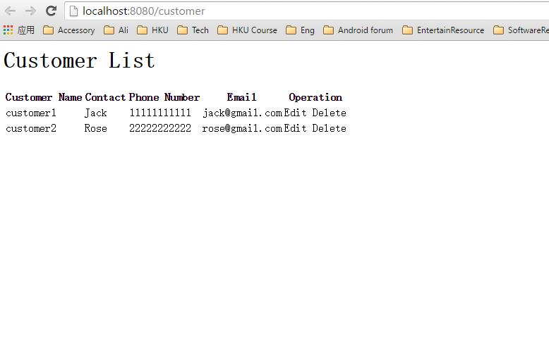

Obieframework
This is a simple JAVA WEB framework based on Servlet and JSP. It provides some popular features including Ioc, Aop and transaction, also supports some configurations based on file. It's a good choice to build a simple project based on this framework to know the basic mechanism inside a WEB framework.
Get started
To build a basic WEB application with this framework, you only need to do 4 steps.
1. Design your database scheme, configure the database and define the model class.
We put data configuration in the form of configuration file. By configuring config.properties, you can specify the database you want to use. Then create a database and some tables as you want, and create model classes for them.
  2. Define a controller.
Use "Controller" annotation to decorate the controller class, and use "Inject" annotation to decorate the object initailized by the framework. The "Action" annotation specifies the request method and path by its parameter. The View object returned by the method contains the path of JSP page, and you can add parameters to this page by the View.addModel method.
3. Define a service.
Use "Service" annotation to decorate the service class. Add "Transaction" annotation to provide transaction feature to current method.
4. Complete the JSP page.
The variable accessed in JSP page is defined in View object in controller.
5. Run your web server and test your application
Have fun.
Documentation
To be complemented.
Authors and Contributors
The previous design and implementation comes from Mr.Huang Yong from Alibaba. I implemented my own version according to his design to satisfy my pratical requirement.